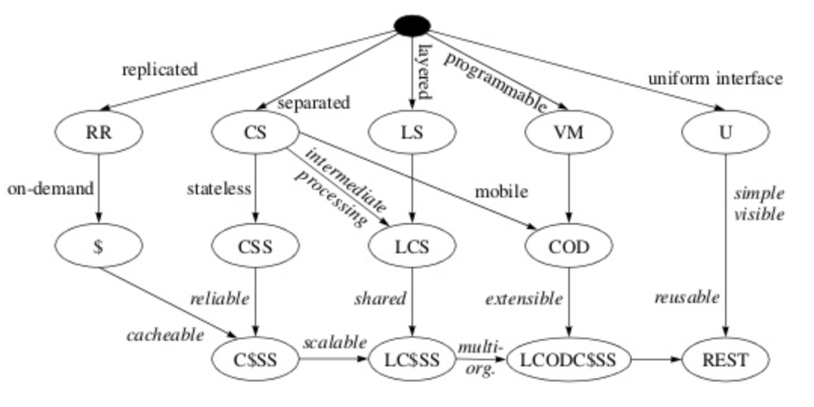

5 种架构风格
- 数据流风格 Data-flow Styles
- 优点：简单性、可进化性、可扩展性、可配置性、可重用性
- 如 协议分层
- 复制风格 Replication Style
- 优点：用户可察觉的性能、可伸缩性，网络效率、可靠性也可以得到提升
- 分层风格 Hierarchical Style
- 优点：简单性、可进化性、可伸缩性
- 移动代码风格 Mobile Code Style
- 优点：可移植性、可扩展性、网络效率
- 点对点风格 Peer-to-Peer Style
- 优点：可进化性、可重用性、可扩展性、可配置性
数据流风格 Data-flow Style
- 管道与过滤器 Pipe And Filter，PF
- 每个 Filter 都有输入端和输出端，只能从输入端读取数据，处理后再从输入端产生数据
- 统一接口的管道与过滤器 Uniform Pipe And Filter，UPF
- 在 PF 上增加了统一接口的约束，所有 Filter 过滤器必须具备同样的接口
分层风格 Hierarchical Style
- 客户端服务器 Client-Server，CS
- 由 Client 触发请求，Server 监听到请求后产生响应，Client 一直等待收到响应后，会话结束
- 分离关注点隐藏细节，良好的简单性、可伸缩性、可进化性
- 分层系统 Layered System，LS
- 每一层为其之上的层服务，并使用在其之下的的层所提供的服务。例如 TCP/IP
- 分层客户端服务器 Layered Client-Server，LCS
- LS + CS
- 例如正向代理和反向代理，从空间上分为外部层与内部层
- 无状态、客户端服务器 Client-Stateless-Server，CSS
- 基于 CS*，服务器上不允许有 *session state 会话状态
- 提升了可见性、可伸缩性、可靠性，但重复数据导致网络性能降低
- 缓存、无状态、客户端服务器 Client-Cache-Stateless-Server，C$SS
- 提升性能
- 分层、缓存、无状态、客户端服务器 Layered-Client-Cache-Stateless-Server，LC$SS
分层风格 Hierarchical Style（二）
REST 不使用
- 远程会话 Remote Session，RS
- CS 变体，服务器保存 Application State 应用状态
- 如 FTP*，需要保存 *Application State 应用状态
- 可伸缩性、可见性
- CS 变体，服务器保存 Application State 应用状态
- 远程数据访问 Remote Data Access，RDA
- CS 变体，Application state 应用状态同时分布在客户端与服务器
- 巨大的数据集有可能通过迭代而减少
- 简单性、可伸缩性差
- 如 SQL curser
移动代码风格 Mobile Code Style
- 虚拟机 Virtual Machine，VM
- 分离指令与实现
- 云服务器 和 JVM
- 远程求值 Remote Evaluation，REV
- 基于 CS 的 VM，将代码发送至服务器执行
- 按需代码 Code on Demand，COD
- 服务器在响应中发回处理代码，在客户端执行
- 优秀的可扩展性和可配置性，提升用户可察觉性能和网络效率
- JavaScript，需要时访问代码
- 分层、按需代码、缓存、无状态、客户端服务器 Layered-Code-on-Demand-Client-Cache-Stateless-Server，LCODC$SS
- LC$SS + COD
- 移动代理 Mobile Agent，MA
- 相当于 REV + COD
点对点风格 Peer-to-Peer Style
REST 不使用
Event-based Integration，EBI
- 基于事件集成系统
- 如用类似 Kafka 这样的消息系统 + 分发订阅来消除耦合
- 优秀的可重用性、可扩展性、可进化性
- 缺乏可理解性
- 由于消息广播等因素造成的信息风暴，可伸缩性差
- 基于事件集成系统
Chiron-2，C2
《A Component- and Message-Based Architectural Style for GUI Software》
- 相当于 EBI + LCS，控制了消息的方向
Distributed Objects，DO
- 组件结对交互
- 难以使用
Brokered Distributed Objects，BDO
- 引入名字解析组件来简化 DO
- 如 CORBA
- 引入名字解析组件来简化 DO
演变过程

1 | graph TB |